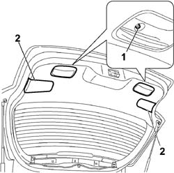
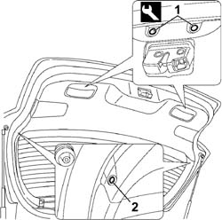
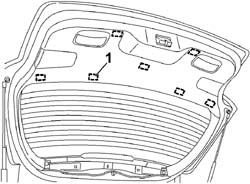

7015A04 TAILGATE INTERIOR PANEL - R+R
- Path
- Procedures > 70 FITTINGS > 7015 TAILGATE/FLAP > 7015A TAILGATE ASSEMBLY > 7015A04 TAILGATE INTERIOR PANEL - R+R
- Kind
- repair procedure (removal / refitting; the operation number is the code)
- Applies to
- all engines; all production periods
- Interactive page
- https://sloeber94.github.io/elrnDB-fCrm/en/#/194000940
Applies to: all engines; all production periods
 Removing
Removing
 Refitting
Refitting- Open the tailgate.
1. Undo the retaining bolts.
2. Release the covers to gain access to the mounting points.

Applies to: all engines; all production periods
1. Release the retaining studs using a special tool.
Tool | Description | Function | Validity |
|---|---|---|---|
1878077000 | Knife | Retainer removal |
2. Undo the fixing bolts on the two sides.

Applies to: all engines; all production periods
1. Using a special tool, release the retaining clips located in the areas shown in the diagram and remove the tailgate inner panel.

Applies to: all engines; all production periods
Refitting
Removing- Check that the panel is not damaged and check that the inner retaining clips are intact and correctly positioned.
- Place the panel correctly in position in its housing and press on the mounting points to fit the clips.
- Fit the securing buttons.
- Tighten the retaining bolts.
- Restore the covers.
Topics that link to this page (11)
- J004 BACK WINDOW WIPER NOT WORKING
- 5050C42 REAR WIPER MOTOR - R+R
- 5505C41 PASSENGER COMPARTMENT WIRING - R.R
- 7015A07 <x>TAILGATE SIDE TRIM - R&R</x>
- 7015B10 SINGLE TAILGATE LOCK - R+R OR REPAIR WITH PANEL/PROTECTION REMOVED
- 7015B60 EXTERIOR HANDLE FOR OPENING TAILGATE WITH TAILGATE UNLOCKING SWITCH - R.R.
- 7015B70 TAILGATE LOCK MOTOR - R.R AND CHECK LOCK SUPPLY LINE
- 7035B14 REAR WINDOW GLASS - R.R INCLUDES CLEANING HOUSING
- 7055A83 BADGE ON TAILGATE - R.R
- 7205E56 STRIPPING TAILGATE
- 7210E56 R.R. TAILGATE